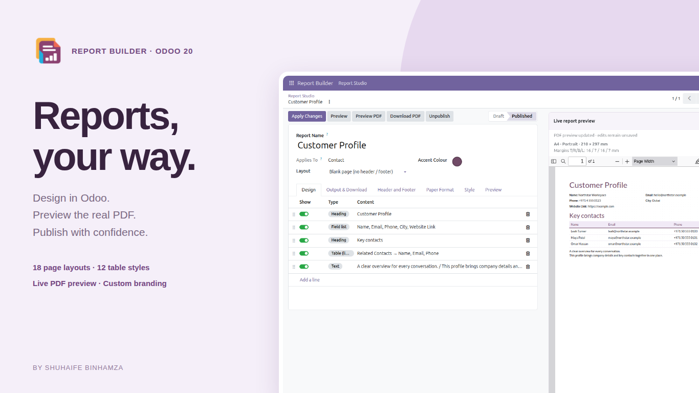
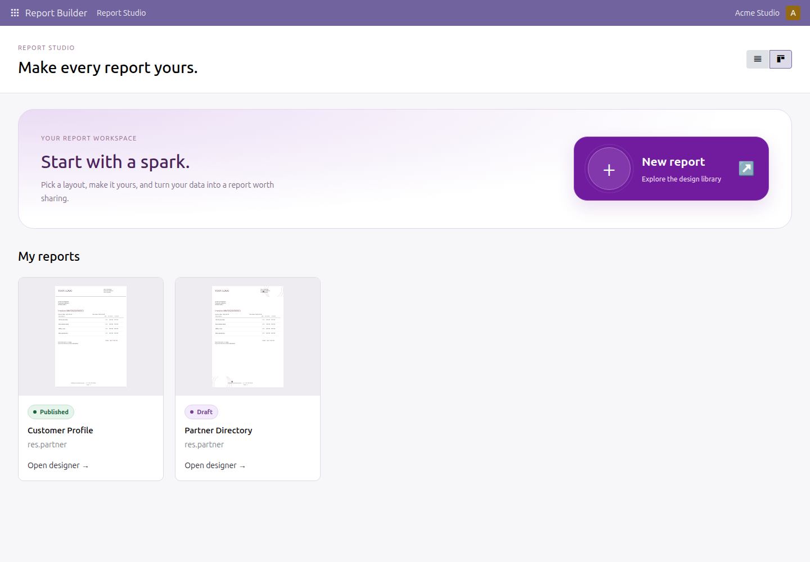
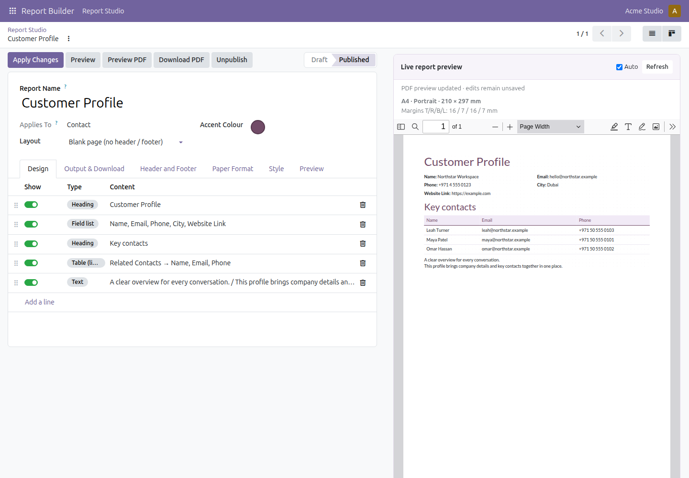
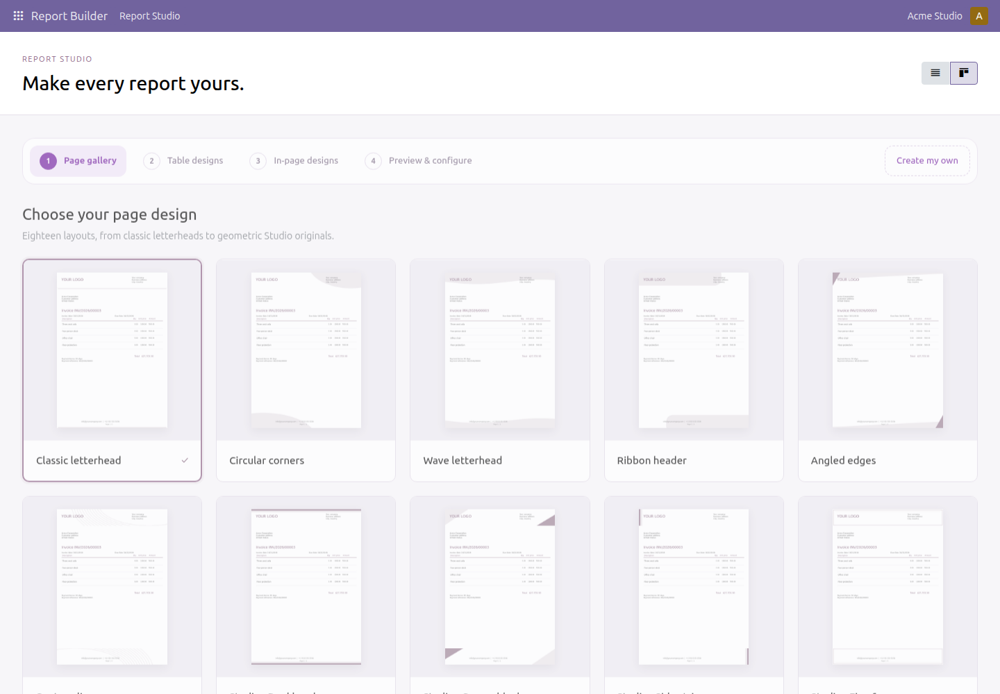
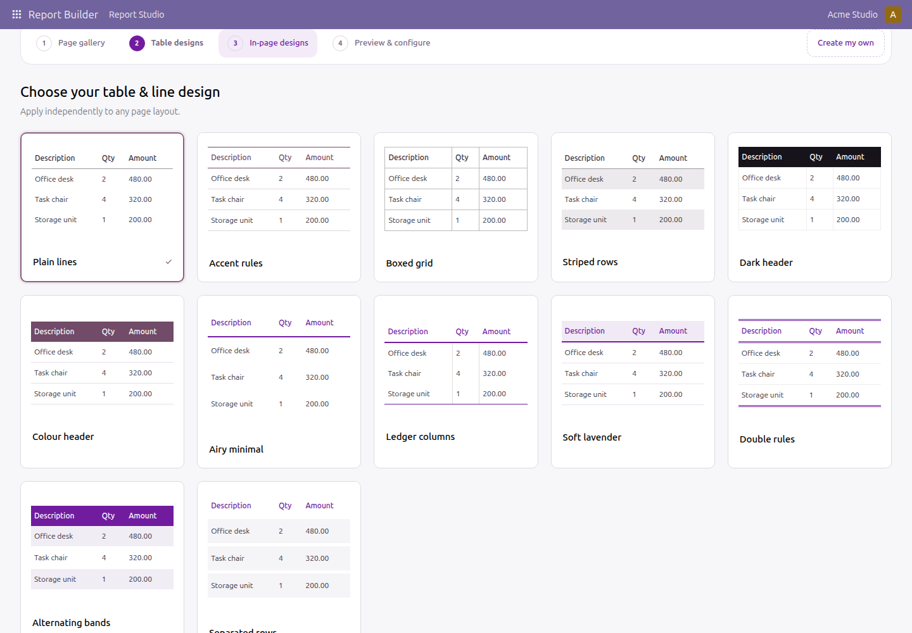
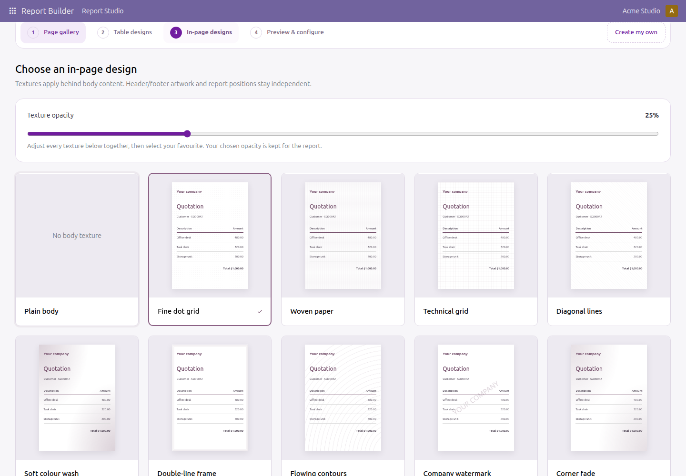
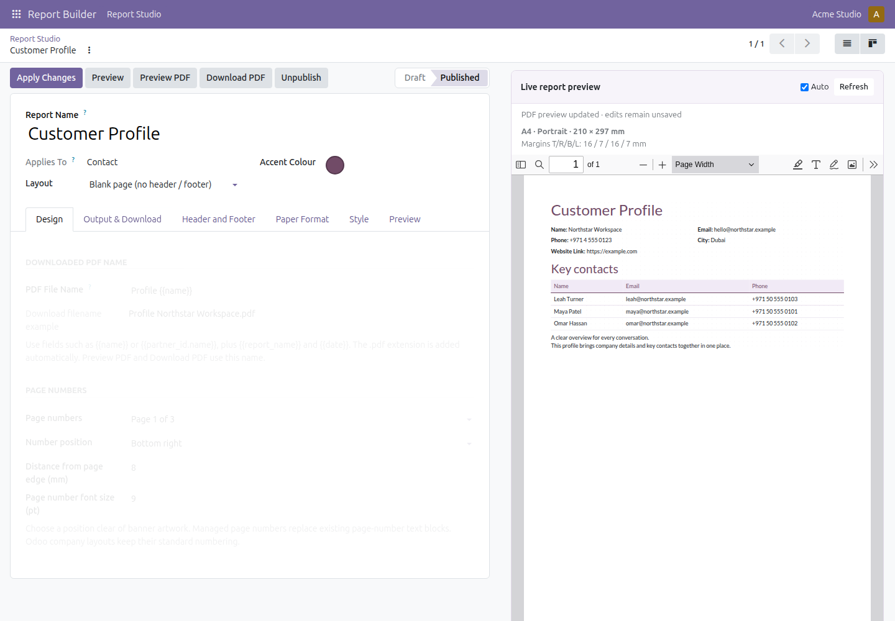

<section class="oe_container" style="font-family:Arial,sans-serif;color:#302537;">
<div class="container" style="max-width:1100px;">
<div class="p-4 p-md-5 my-4" style="background-color:#f5effa;border:1px solid #e9dcef;border-radius:20px;">
<div class="row align-items-center"><div class="col-md-9"><p style="font-size:12px;font-weight:700;color:#805a90;">ODOO 20 &nbsp; / &nbsp; VISUAL PDF DESIGN</p><h1 style="font-size:44px;font-weight:700;color:#482257;">Report Builder</h1><p style="font-size:20px;line-height:1.6;color:#6f6075;">Your data. Your layout. Your report.</p><p style="font-size:16px;line-height:1.8;">Design, preview and publish custom QWeb PDF reports in a familiar Odoo form editor. Build from a gallery or start with a blank page.</p></div><div class="col-md-3 text-center"></div></div>
<div class="d-flex flex-wrap mt-3"><span class="px-3 py-2 mr-2 mb-2" style="background-color:white;border:1px solid #e4d6ec;border-radius:20px;font-size:13px;">18 page designs</span><span class="px-3 py-2 mr-2 mb-2" style="background-color:white;border:1px solid #e4d6ec;border-radius:20px;font-size:13px;">12 table styles</span><span class="px-3 py-2 mb-2" style="background-color:white;border:1px solid #e4d6ec;border-radius:20px;font-size:13px;">Website app not required</span></div></div>

<div class="text-center my-5"><p style="font-size:12px;font-weight:700;color:#805a90;">BUILD IT YOUR WAY</p><h2 style="font-size:30px;font-weight:700;">From a first draft to the Print menu</h2><p style="color:#76667e;font-size:16px;">One place to shape the report, style the page and check the output.</p></div>
<div class="row"><div class="col-md-4 mb-4"><div class="p-4 h-100" style="background-color:#fbf9fd;border:1px solid #ece4f2;border-radius:14px;"><h3 style="font-size:18px;font-weight:700;color:#6e397e;">18 page layouts</h3><p style="font-size:14px;line-height:1.8;color:#76667e;">Start with letterheads, curves, geometric corners and original Studio layouts.</p></div></div><div class="col-md-4 mb-4"><div class="p-4 h-100" style="background-color:#fbf9fd;border:1px solid #ece4f2;border-radius:14px;"><h3 style="font-size:18px;font-weight:700;color:#6e397e;">12 table styles</h3><p style="font-size:14px;line-height:1.8;color:#76667e;">Choose ruled, boxed, striped, coloured, minimal and other table treatments.</p></div></div><div class="col-md-4 mb-4"><div class="p-4 h-100" style="background-color:#fbf9fd;border:1px solid #ece4f2;border-radius:14px;"><h3 style="font-size:18px;font-weight:700;color:#6e397e;">Live PDF preview</h3><p style="font-size:14px;line-height:1.8;color:#76667e;">See unsaved changes using the same PDF engine and paper settings as the final report.</p></div></div><div class="col-md-4 mb-4"><div class="p-4 h-100" style="background-color:#fbf9fd;border:1px solid #ece4f2;border-radius:14px;"><h3 style="font-size:18px;font-weight:700;color:#6e397e;">Headers and footers</h3><p style="font-size:14px;line-height:1.8;color:#76667e;">Upload banners or build content blocks. Repeat them or show them only once.</p></div></div><div class="col-md-4 mb-4"><div class="p-4 h-100" style="background-color:#fbf9fd;border:1px solid #ece4f2;border-radius:14px;"><h3 style="font-size:18px;font-weight:700;color:#6e397e;">Watermarks and textures</h3><p style="font-size:14px;line-height:1.8;color:#76667e;">Control background opacity, size, alignment and saturation. Add one of ten in-page textures.</p></div></div><div class="col-md-4 mb-4"><div class="p-4 h-100" style="background-color:#fbf9fd;border:1px solid #ece4f2;border-radius:14px;"><h3 style="font-size:18px;font-weight:700;color:#6e397e;">Output that fits</h3><p style="font-size:14px;line-height:1.8;color:#76667e;">Set paper formats, margins, fonts, page numbers and the downloaded filename.</p></div></div></div><div class="my-5 p-4" style="background-color:#f1f8f7;border:1px solid #d9eae6;border-radius:16px;"><h2 style="font-size:24px;color:#23685d;font-weight:700;">Four simple steps</h2><div class="row"><div class="col-md-3 mt-3"><strong>01 · Pick a page</strong><p>Choose a layout or create your own.</p></div><div class="col-md-3 mt-3"><strong>02 · Style the details</strong><p>Select a table design and body texture.</p></div><div class="col-md-3 mt-3"><strong>03 · Configure</strong><p>Choose a model, branding and paper format.</p></div><div class="col-md-3 mt-3"><strong>04 · Publish</strong><p>Review the PDF and add it to the model’s Print menu.</p></div></div></div><div class="my-5"><h2 style="font-size:27px;font-weight:700;color:#482257;">A workspace for every report</h2><p style="font-size:15px;line-height:1.8;color:#76667e;">Keep published and draft designs together. Start a new report from the welcome panel.</p><div class="p-2" style="background-color:#f7f4fa;border:1px solid #e8deee;border-radius:12px;"></div></div><div class="my-5"><h2 style="font-size:27px;font-weight:700;color:#482257;">Edit the report. See the PDF.</h2><p style="font-size:15px;line-height:1.8;color:#76667e;">Configure blocks in the form editor while the live PDF stays on the right. Preview edits without saving them.</p><div class="p-2" style="background-color:#f7f4fa;border:1px solid #e8deee;border-radius:12px;"></div></div><div class="my-5"><h2 style="font-size:27px;font-weight:700;color:#482257;">Find your starting point</h2><p style="font-size:15px;line-height:1.8;color:#76667e;">Browse 18 page layouts, then combine the selected artwork with an independent table style and texture.</p><div class="p-2" style="background-color:#f7f4fa;border:1px solid #e8deee;border-radius:12px;"></div></div><div class="my-5"><h2 style="font-size:27px;font-weight:700;color:#482257;">Give your tables a clear hierarchy</h2><p style="font-size:15px;line-height:1.8;color:#76667e;">Choose from 12 table styles. The selected styling is used in generated QWeb reports.</p><div class="p-2" style="background-color:#f7f4fa;border:1px solid #e8deee;border-radius:12px;"></div></div><div class="my-5"><h2 style="font-size:27px;font-weight:700;color:#482257;">Make the page your own</h2><p style="font-size:15px;line-height:1.8;color:#76667e;">Adjust all texture thumbnails together with the opacity slider, then select the design that suits your report.</p><div class="p-2" style="background-color:#f7f4fa;border:1px solid #e8deee;border-radius:12px;"></div></div><div class="my-5"><h2 style="font-size:27px;font-weight:700;color:#482257;">Control the final download</h2><p style="font-size:15px;line-height:1.8;color:#76667e;">Set the PDF name, page-number format and position. Use field placeholders to create useful filenames.</p><div class="p-2" style="background-color:#f7f4fa;border:1px solid #e8deee;border-radius:12px;"></div></div><div class="my-5 p-4" style="border:1px solid #e8deee;border-radius:16px;"><h2 style="font-size:24px;font-weight:700;color:#482257;">What you can configure</h2><div class="row"><div class="col-md-6"><ul style="line-height:2;"><li>Headings, text, field lists and line tables</li><li>Totals, images, signatures and page breaks</li><li>Company branding and uploaded banners</li><li>Repeat or first/last-page header and footer controls</li></ul></div><div class="col-md-6"><ul style="line-height:2;"><li>Paper size, orientation and existing paper formats</li><li>Fonts, report colours and table styling</li><li>Watermarks, textures, opacity and saturation</li><li>Page-number position and filename placeholders</li></ul></div></div></div>
<div class="my-5 p-4" style="background-color:#fbf9fd;border:1px solid #e8deee;border-radius:16px;"><h2 style="font-size:24px;font-weight:700;color:#482257;">Before you install</h2><ul style="line-height:1.9;color:#685871;"><li><strong>Platform:</strong> Odoo 20, on-premise or Odoo.sh. Custom Python addons cannot be installed on standard Odoo Online.</li><li><strong>Dependencies:</strong> Base and Web. The Website app is not needed.</li><li><strong>PDF rendering:</strong> a configured, working Odoo PDF engine is required. Banner repeat controls were tested with patched wkhtmltopdf.</li><li><strong>Python:</strong> ReportLab and Pillow must be available in the Odoo environment.</li><li><strong>Access:</strong> report design and publishing are limited to Settings administrators.</li><li><strong>Business models:</strong> ready-made choices depend on installed apps. Sales, Invoices, Purchase Orders and Delivery Slips require their respective business apps; custom persistent models can also be selected.</li><li><strong>Preview:</strong> uses an accessible sample record. New reports must be saved once; edits inside block dialogs appear after Save &amp; Close.</li><li><strong>Data:</strong> report rendering stays on your Odoo server. No external rendering subscription or activation key.</li></ul></div>
<div class="text-center p-4 my-5" style="background-color:#f5effa;border:1px solid #e9dcef;border-radius:20px;"><p style="font-size:12px;font-weight:700;color:#805a90;">CREATED BY</p><h2 style="font-size:25px;color:#482257;">Shuhaife Binhamza</h2><p style="color:#76667e;">Report Builder · Odoo 20 · LGPL-3</p><p style="font-size:13px;color:#76667e;">For installation assistance, use the contact details on the vendor profile.</p></div>
</div></section>